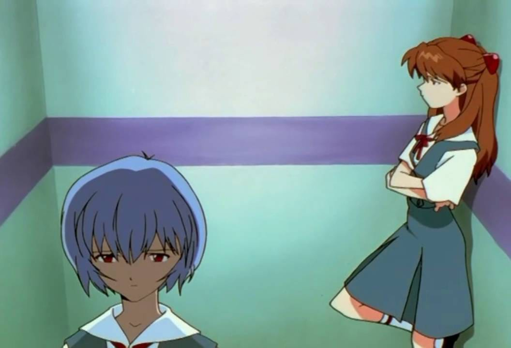

Asuka Langley Soryu é a "Segunda Criança" e prodígio designada para pilotar a Unidade Evangelion-02. Com uma personalidade forte, competitiva e MUITAS VEZES arrogante, ela esconde um passado traumático e uma busca incessante por reconhecimento e independência.
Deixe sua nota e opinião sobre a nossa querida ruiva estressadinha na seção abaixo!.
"MELHOR PERSONAGEM, amo a asuka, ela é linda e irritada igual a minha ex TEAMO ASUKA!!! melhor q ela só a dos filmes rebuild q inteligente e pistola🤤 "as" Asuka são omplexidade pura!"
"Muito barulhenta, prefiro o silêncio da Rei."